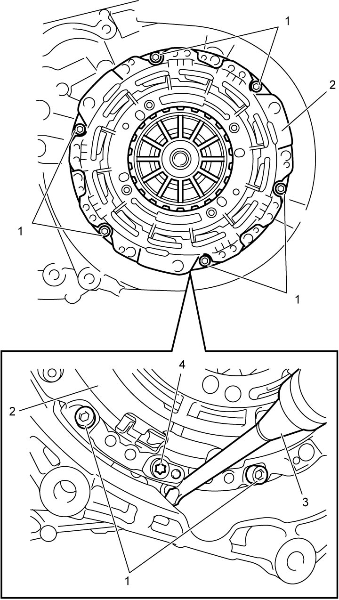
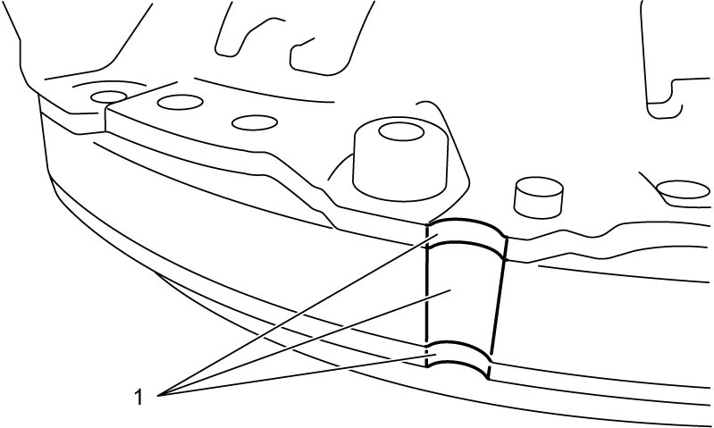
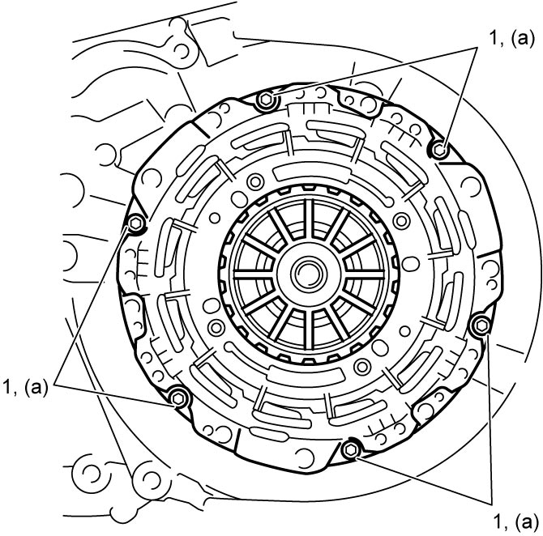

5F
| Odd Gear Clutch Assembly Removal and Installation |
NOTICE:
The odd gear clutch assembly will lose its original performance if it is disassembled.
Do not disassemble the odd gear clutch assembly.
Removal
1)Remove odd gear clutch control actuator. 
2)Remove odd gear clutch assembly (2) as follows.

a)Lock odd gear clutch assembly inserting flat-bladed screwdriver (3) or the like.
b)Remove odd gear clutch assembly bolts (1) and then remove odd gear clutch assembly (2).
NOTICE:
Loosening or removing Torx® bolts (4) will disturb arrangement of inner parts and the restoration is difficult.
Do not loosen Torx® bolts (4) of odd gear clutch.

 "Expand image")
Installation
Reverse removal procedure noting the following points.
•Check grooves (1) on odd gear clutch assembly are aligned. If not aligned, replace odd gear clutch assembly.
•Tighten new odd gear clutch assembly bolts (1) to specified torque.
•After replacing odd gear clutch assembly, perform TCM and Clutch Initialization.

 "Expand image")
NOTICE:
The odd gear clutch assembly bolts are pre-coated with adhesive. If the bolts are reused, they may work loose.
Use new odd gear clutch assembly bolts.

 "Expand image")